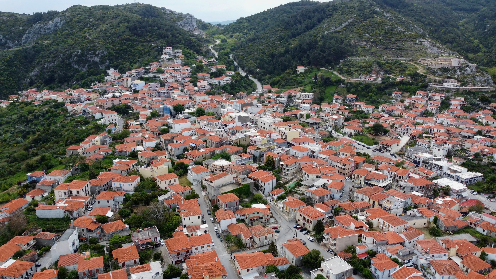
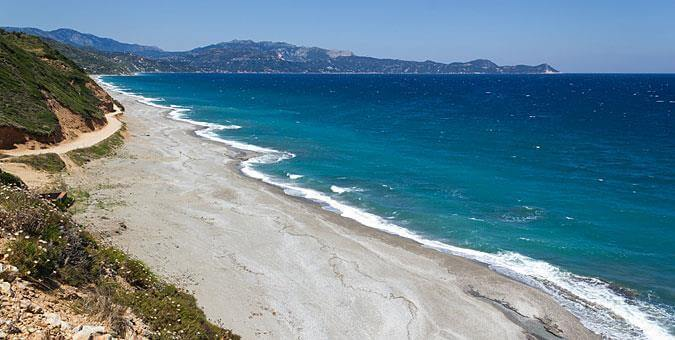
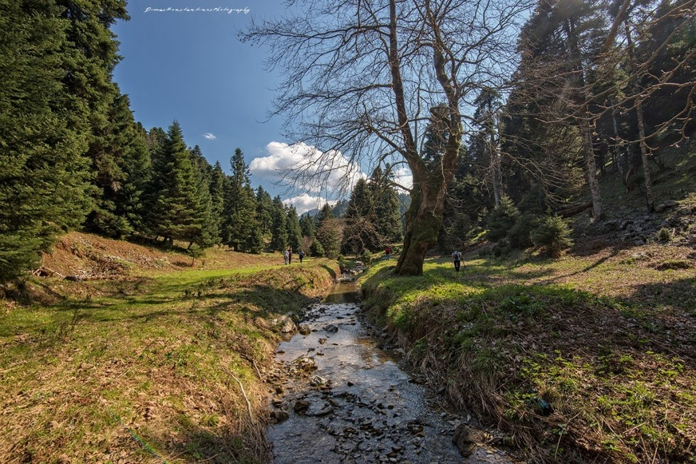
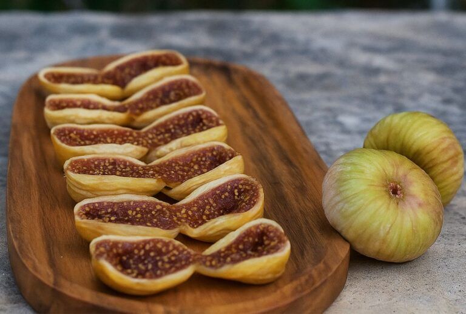
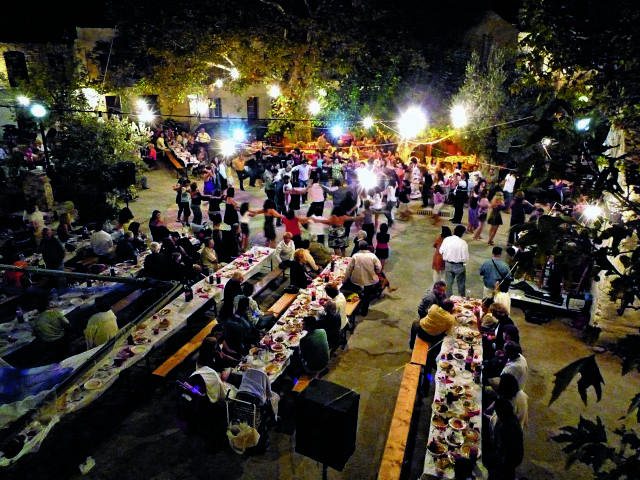

Επισκεφθείτε το αγρόκτημα
Βρισκόμαστε στο Μεντούλι, λίγα λεπτά από την Κύμη. Καλέστε ή στείλτε μήνυμα πριν έρθετε, ώστε να έχουμε έτοιμο ό,τι ψάχνετε.
Πώς θα μας βρείτε.
Το αγρόκτημα είναι ανοιχτό κατόπιν συνεννόησης. Επικοινωνήστε μαζί μας για να οργανώσουμε την επίσκεψή σας.
- Τοποθεσία
- Μεντούλι, Κύμη, Εύβοια
- hello@kamaraki.farm
- Ώρες επίσκεψης
- Καθημερινά 0800 - 1900
- Πρόσβαση
- Από την πόλη της Κύμη, ακολουθήστε τον δρόμο προς Κονίστρες, προσπεράστε τη στροφή προς Παραλία Κύμης και Πλατάνα, και θα βρείτε το Καμαράκι μόλις 500 μέτρα παρακάτω, πάνω στον κεντρικό δρόμο. Χώρος στάθμευσης διαθέσιμος.
Η Κύμη και τα χωριά της Εύβοιας.
Η Κύμη είναι κωμόπολη της ανατολικής Εύβοιας με θέα στο Αιγαίο. Από το λιμάνι της φεύγουν πλοία για Σκύρο, Σκόπελο και Αλόννησο, και στην παραλία στέκει ο παλιός Ατμόμυλος του 19ου αιώνα.

Μια γωνιά με βαθιές ρίζες.
Η Κύμη είναι η γενέτειρα του Γεώργιου Παπανικολάου, του πρωτοπόρου επιστήμονα που άλλαξε την παγκόσμια ιατρική με το τεστ Παπ, με το σπίτι του στην πόλη να λειτουργεί σήμερα ως μουσείο. Σε κοντινή απόσταση, το καταπράσινο Κοτυλαίο όρος προσκαλεί τους λάτρεις της φύσης σε εξαιρετικές διαδρομές πεζοπορίας ανάμεσα σε πυκνά δάση και παλιόμορφα μονοπάτια, συνδυάζοντας την πλούσια ιστορία με την εξερεύνηση της ορεινής Εύβοιας. Και το γεφύρι που έδωσε το όνομά του στο αγρόκτημά μας είναι κομμάτι αυτού του τοπίου.
Τι να κάνετε στην περιοχή.
Συνδυάστε την επίσκεψή σας στη φάρμα με εμπειρίες που μόνο η Εύβοια μπορεί να προσφέρει.

Παραλίες & Κολύμβηση
Η Παραλία Κύμης είναι το κεντρικό παραθαλάσσιο σημείο. Κοντά θα βρείτε τις Πλατάνα και Σουτσίνι. Λίγο παρακάτω θα βρείτε την παραλία του Αγίου Γεωργίου, ενώ τα Θαψά, η περίφημη «γαλάζια λίμνη» της Εύβοιας, είναι διαδρομή σε μη ασφαλτοστρωμένο δρόμο, οπότε ελέγξτε τις συνθήκες πριν πάτε.

Πεζοπορία & Εξερεύνηση
Τα μονοπάτια γύρω από την Κύμη ταιριάζουν σε κάθε εποχή. Μια από τις πιο όμορφες διαδρομές ξεκινά από το Χωνευτικό, με καφέ κάτω από τα δέντρα και νερό από την πηγή, και το καλοκαίρι μπορείτε να φτάσετε στους καταρράκτες στα Μανίκια. Τα περισσότερα μονοπάτια κάνουν και για ποδήλατο. Τα Μανίκια είναι επίσης από τα γνωστότερα πεδία αναρρίχησης στην Ελλάδα, με κόσμο και τον χειμώνα. Περάστε από τη φάρμα για φρέσκο φαγητό πριν ή μετά τη μέρα στον βράχο.

Γαστρονομία & Τοπικά Προϊόντα
Η Κύμη φημίζεται για τα σύκα της, και τα ξηρά σύκα Κύμης έχουν Προστατευόμενη Ονομασία Προέλευσης (ΠΟΠ). Ζητήστε και την «ασκάδα», όπως λένε στην Κύμη τα δύο αποξηραμένα σύκα που κολλούν μεταξύ τους. Στην Πλατάνα, ένα παραθαλάσσιο χωριό με γραφικά ταβερνάκια, θα φάτε ψάρι και μεζέδες. Από τη φάρμα μας πάρτε ό,τι ταιριάζει στο τραπέζι σας: λαχανικά εποχής, ελαιόλαδο, μαρμελάδα σύκο ή chutney.

Εκδηλώσεις & Πανηγύρια
Το Λαογραφικό Μουσείο Κύμης θεωρείται από τα καλύτερα της Εύβοιας, και παράρτημά του στεγάζεται στο Αρχοντικό Χρυσανθόπουλου, στον Πύργο. Στην πόλη μπορείτε να δείτε το σπίτι του Γεωργίου Παπανικολάου, που γεννήθηκε στην Κύμη, και στην παραλία τον παλιό Ατμόμυλο, χτισμένο στα τέλη του 19ου αιώνα. Το πέτρινο γεφύρι που έδωσε το όνομά του στη φάρμα είναι κομμάτι του ίδιου τοπίου. Ελέγξτε τα ωράρια των μουσείων πριν πάτε.